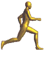

Introduction :
Les images sont un élément fondamental pour un site internet. Elles lui donnent une identité graphique et le rendent attrayant. Néanmoins, il faut être attentif à deux choses : le poids qu'elles représentent et l'information qu'elles apportent.
Concernant le poids, les images sont beaucoup plus volumineuses que le contenu textuel évoqué jusqu'à présent (HTML, CSS et JavaScript). Il est donc nécessaire de choisir attentivement leur nombre (lesquelles sont réellement utiles ?), leur taille et leur format.
Concernant l'accessibilité, il faut s'assurer que l'image est correctement restituée aux internautes en utilisant un lecteur d'écran.
La première partie de ce chapitre présente la manière dont les images sont gérées par le HTTP et les navigateurs. La deuxième partie détaille les différents formats d'images : JPEG, GIF et PNG.
Insérer une image :
Introduction :


L'une des caractéristiques les plus intéressantes du HTML est la possibilité d'inclure des images dans une page, soit en tant qu'élément en ligne, soit en tant qu'élément à part (téléchargé via un lien), ou en tant qu'arrière-plan de la page. On peut également insérer des images dans les listes en remplacement des puces ou encore dans les liens. Insérées judicieusement dans le contenu, les images rendent les pages HTML plus attractives. Elles enrichissent l'information et facilitent la lecture.
Attention, placer trop d'images dans un texte assomme parfois la lecteur et l'empêche de se concentrer sur l'essentiel, n'est-ce pas Astérix ?
La balise <img> :
L'élément img permet l'insertion d'une image dans une page HTML. Pour insérer une image dans une page HTML, il suffit de placer la balise <img> en spécifiant la référence de l'image à insérer.
img est un élément vide car il ne possède pas de contenu.
En HTML, l'élément imgdoit renfermer les attributs suivants :
- src :
- indique où se trouve le fichier à afficher dans la page HTML (source). On peut définir soit un lien relatif soit un lien absolu comme pour l'élément a.
- alt :
- contient un texte descriptif de l'image (descriptif alternatif). Cette fonction est utile pour les personnes ayant des déficiences visuelles par exemple. Elle est également affichée lorsque l'image est indisponible sur le serveur.
On peut également ajuster la taille de l'image (hauteur et largeur) en utilisant une feuille de style (voir le chapitre CSS). Il suffit alors de jouer avec les attributs height et width dans le CSS. Ceci ne change rien à l'image, ça modifie uniquement l'apparence de celle-ci dans une page HTML.
Si l'image est trop volumineuse ou si on désire modifier pour toujours la taille de l'image, il est plus judicieux de la modifier via un logiciel adapté comme GIMP par exemple.
La gestion des images par le navigateur :
Lorsque le navigateur croise une balise <img>, il ne réagit pas comme il le fait avec une autre balise comme <p> ou <h1>. Effectivement, il ne s'agit plus d'afficher simplement l'élément mais de rechercher l'image référencée avant de l'afficher.
Supposons le corps d'une page HTML sur un serveur quelconque :
| Le code de la pahe leChat.html : | L'affichage par le navigateur : |
|---|---|
|
Voici un dessin du chat :
|
Le navigateur affiche donc la page HTML mais doit également chercher les images qu'elle contient sur le serveur. Pratiquement, lorsqu'un utilisateur consulte la page leChat.html, son navigateur interroge le serveur Web afin d'obtenir cette page. Le navigateur fournit ensuite la page leChat.html.

Ensuite, le navigateur lit le fichier leChat.html et l'affiche. Il se rend compte ensuite qu'il doit afficher une image. Il va donc chercher cette image sur le serveur. Si le fichier HTML contient plusieurs images, le navigateur fera plusieurs requêtes au serveur (une pour chaque image).
La gestion des images par le développeur web :
Lorsqu'on développe un site web renfermant bon nombre d'images, il est indispensable de réfléchir à l'organisation des fichiers. En général, on crée un répertoire images à la source du site qui renferme toutes les images. Mais parfois il est judicieux de créer un répertoire images dans chaque partie du site.
Les formats d'images :
Comme montré dans l'exemple ci-dessus, pour chaque image d'une page HTML, le navigateur fait une requête au serveur. Ce qui signifie que chaque image doit être transférée sur le web. Le temps nécessaire au transfert réseau d'une image dépend de la qualité du réseau mais surtout de la taille du fichier. Par exemple, une image de 3 Ko sera transférée plus rapidement qu'une image de 50 Ko. Il est donc judicieux de choisir correctement le format de l'image en fonction des besoins.
On distingue les différents formats notamment par le nombre de couleurs que ceux-ci sont capables de gérer mais aussi par le fait qu'ils soient capables ou non de gérer la transparence.
Les navigateurs reconnaissent nativement certains formats d'images : GIF, JPG et PNG. La plupart du temps, les autres formats multimédias demandent des applications particulières que chaque internaute doit récupérer et installer. Par exemple, Adobe Flash doit être installé pour lire les fichiers .swf (Shockwave Flash). Les formats GIF et JPEG existent depuis longtemps (avant le web) et sont les plus répandus.
Le SVG :
Le SVG (Scalable Vector Graphics) est un format vectoriel. Son avantage est que, quel que soit le facteur de zoom, l'image est toujours parfaite sans aucun effet de pixélisation. il est donc bien adapté pour un logo, un schéma, un dessin ou une icône, mais il n'est pas adapté pour une photo puisque celle-ci peut difficilement être réduite à des formes géométriques, à moins de souhaiter un effet artistique particulier ! Le SVG est basé sur un langage utilisant des balises, à l'instar d'HTML. Il est donc possible de l'éditer à l'aide d'un éditeur de texte.
Dans le cas d'une balise <svg>définie dans le code HTML, il n'est pas possible de procéder de même, car cette balise ne possède pas l'attribut alt. Il est donc nécessaire de passer par un autre moyen pour indiquer si l'image est décorative ou pour donner une alternative textuelle si elle ne l'est pas. Pour indiquer qu'une image vectorielle est décorative, il suffit d'utiliser l'attribut aria-hidden positionné à true. Ainsi, elle est ignorée par les lecteurs d'écran.
Syntaxe pour une image vectorielle décorative :
<svg width="..."height="..." xmlns="https://www.w3.org/2000/svg" version="1.1" aria-hidden="true">
Exemple :
<svg height="150px" width="160px" aria-hidden="true" xmlns="http://www.w3.org/2000/svg" version="1.1">
<circle cx="80" cy="50" r="50" fill="magenta" fill-opacity="0.5"/>
<circle cx="50" cy="100" r="50" fill="yellow" fill-opacity="0.5"/>
<circle cx="110" cy="100" r="50" fill="cyan" fill-opacity="0.5"/>
</svg>Pour une image vectorielle porteuse d'informations, il faut d'une part lui donner le rôle d'image avec l'attribut role à img et d'autre part indiquer l'alternative avec l'attribut aria-label.
Syntaxe pour une image vectorielle porteuse d'informations :
<svg width="..." height="..." xmlns="http://www.w3.org/2000/svg" version="1.1" role="img" aria-label="alternative textuelle">
Remarque : La balise <svg> est, avec le code JavaScript, une rare exception qui demande de tester la restitution faite par les lecteurs d'écran en raison d'implémentations changeantes entre les différents navigateurs et lecteurs d'écran.
Le format PNG :

Le format PNG (Portable Network Graphics) initialement destiné à remplacer le GIF propriétaire, est un format libre indépendant de toute plateforme. PNG est recommandation du W3C. Le PNG peut être utilisé dans les mêmes cas que le GIF mais fournit un résultat de meilleure qualité par exemple pour la 3D.

Le format PNG propose une compression non destructive de qualité très élevée (plus que le GIF). Les fichiers PNG sont généralement plus légers que les GIF.
Le format PNG supporte la transparence mais ne permet pas de créer des animations.
Il est bien adapté aux images ayant des grands aplats de couleurs unies (permettant une compression efficace). Même si la règle qui demande d'utiliser le format SVG pour les logos, schémas et icônes fonctionne plutôt bien, il se peut qu'une image PNG soit plus légère si l'image est très complexe et requière la définition d'un très grand nombre de chemins en SVG. Il ne faut donc pas hésiter à comparer.
Le format GIF :

Le format GIF (Graphic Interchange Format) est également multiplateforme mais il a fait l'objet d'un brevet Unisys; il s'agissait d'un format propriétaire (c'est-à-dire qui appartient à une société; son usage n'est pas libre). On recommande le GIF pour des images qui comportent peu de couleurs et des dessins au trait, comme des logos, des formes géométriques, des cliparts, ou des textes transformés en images. Il est capable d'afficher 256 (2^8) couleurs.
Le format GIF est répandu pour la qualité de sa technique de compression qui permet de réduire de manière considérable la taille du fichier sans altérer la qualité de celui-ci.
Le format GIF supporte la transparence et permet également de créer des animations (GIF animés).
Il y a quelques décennies, le GIF animé était la grande tendance des sites internet : le site était actif et donnait une image dynamique... De nos jours, c'est beaucoup moins à la mode, et c'est une bonne chose ! D'une part, cela constitue un élément de distraction qui est perturbant pour la plupart des personnes, et qui peut rendre le reste du contenu inaccessible pour des personnes ayant des troubles de l'attention par exemple. D'autre part, un GIF animé est plus consommateur de ressources qu'une courte vidéo équivalente, qu'un PNG animé (Animated Portable Network Graphics) ou qu'un SVG animé. Ce dernier est à privilégier car, en plus d'être très léger, il est toujours parfaitement lisse, quelle que soit la taille d'affichage.
Dans un SVG animé, les éléments graphiques censés bouger ensemble doivent être regroupés à l'aide d'une balise <g>. Au sein de <g>, une balise <animateTransform> est ajoutée, paramétrée avec différents attributs.
L'attribut type indique le type de mouvement :
| Type de mouvement | Valeur de l'attribut |
|---|---|
| Translation | translate |
| Rotation | rotate |
| Mise à l'échelle | scale |
| Distorsion horizontale | skewX |
| Distorsion verticale | skewY |
Les attributs begin et dur définissent respectivement le moment où commence le mouvement et sa durée. Ces deux valeurs sont indiquées en secondes (s). Exemple : 2s pour 2 secondes.
Les attributs from et to permettent de définir la position initiale et la position finale pour la transformation.
Par exemple, en reprenant le logo de l'ENI, il est possible de l'animer en ajoutant une rotation.
<svg xmlns="http://www.w3.org/2000/svg" viewBox="0 0 184.25 184.25">
<defs>
<style>
.ap {
fill: #144a7f;
}
.pp {
fill: #fff;
}
</style>
</defs>
<rect class="ap" width="184.25" height="184.25"/>
<rect class="pp" x="36.26" y="154.91" width="112.14" height="3.68"/>
<g>
<path class="pp" d="..."/>
<path class="pp" d="..."/>
<path class="pp" d="..."/>
<path class="pp" d="..."/>
<animateTransform attributeName="transform" attributeType="XML" type="rotate" from="360 92 80" to="0 92 80" dr="2s" repeatCount="1"/>
</g>
</svg>Les photographies :
Les appareils photo ont des capteurs de plus en plus performants et produisent donc des photographies avec une meilleure résolution. Le problème est que ces fichiers images sont également d eplus en plus volumineux. Il est donc important de faire un choix quant aux format utilisé, au taux de compression, à la taille et à la résolution de ces photographies.
Le format JPG ou JPEG :
Le format JPEG (Joint Photographic Experts Group) est un format libre indépendant de toute plateforme. Il est recommandé pour les images de types photographiques ou les images complexes. Effectivement, le JPEG sait afficher jusqu'à 16 millions de couleurs, les images sont plus détaillées et plus réalistes.
Le format JPEG est un format de compression mais subissant une perte de qualité.
Le format JPG ne supporte pas la transparence ni le fond transparent.
Les trois images suivantes sont des compressions de plus en plus élevées de la même image.
| Compression faible : 566 Ko - : | Compression moyenne : 2506 Ko - : | Compression forte : 1147 Ko : |
|---|---|---|

|

|
Il est donc nécessaire de choisir le bon compromis entre une image parfaite et un poids d'image faible. Néanmoins, la perte de qualité de l'image due à sa compression permet d'obtenir un fichier moins volumineux qu'avec le format PNG. L'avantage du JPEG est qu'il est supporté par tous les navigateurs.
Les formats WebP et AVIF :
Ces dernières années, de nouveaux formats d'images ont fait leur apparition. Ils ont pour objectifs de proposer des alternatives aux format JPEG en corrigeant ses défauts (artefacts visibles avec une forte compression et non-support de la transparence).
Le WebP est un format proposé par Google. Il offre une meilleure compression que le JPEG à qualité équivalente. Le gain est d'environ 30 %. Le problème est que ce format est supporté depuis peu pour la plupart des navigateurs ainsi les internautes avec un navigateur ancien ne peuvent voir ces images.
Le format AVIF, à usage gratuit, est proposé par une alliance de grosses entreprises (Microsoft, Google, imeo, Amazon, Netflix...). Il est encore plus performant que le WebP : le gain est de l'ordre de 20 %. Mais à l'heure actuelle, il n'est supporté que par les navigateurs Chrome et Opéra (pour Firefox, il faut l'activer dans les Préférences).
Remarque : Avec les dernières versions de GIMP, il est possible d'exporter une image dans le format WebP ou AVIF. Il est également possible d'utiliser un convertisseur en ligne ou installé sur votre machine.
| Format | Poids | Gain par rapport au JPEG |
|---|---|---|
| JPEG | 872 ko | 0 % |
| WebP | 479 ko | 45 % |
| AVIF | 218 ko | 75 % |
Il est possible de proposer une image en plusieurs formats afin de limiter l'utilisation du réseau et de rendre possible son affichage par n'importe quel naviagteur. Pour cela, la balise <picture> permet de lister les fichiers à utiliser par ordre de préférence. Si le navigateur ne supporte pas le premier format, alors il passe au deuxième, et ainsi de suite. À la fin, une balise <img> permet d'afficher une image si aucun des formats précédents n'est supporté. C'est sur une balise <img> que doivent être positionés l'alternative textuelle à l'image et le type de chargement de l'image, qui sont utilisés quel que soit le format d'image supporté par le navigateur.
Syntaxe :
<picture>
<source srcset="image 1" type="type MIME de l'image 1">
<source srcset="image 2" type="type MIME de l'image 2">
...
<img src="image n" alt="..." loading="eager|lazy">
</picture>Seule l'image supportée par le navigateur est téléchargée. Il est possible de vérifier cela en consultant l'onglet Réseaudes outils du développeur de chaque navigateur.
Remarque : Le fait de stocker plusieurs images sur le serveur à la place d'une seule est écologiquement très vite rentabilisé, car il faut deux fois plus d'énergie pour transporter une donnée que pour la stocker pendant un an (source : https://www.greenit.fr/).
La transparence :
Un critère de choix important pour la sélection du format d'une image est le support de la transparence. Parmi les formats cités précédemment, seul le JPEG ne gère pas la transparence. Les formats SVG, PNG, WebP et AVIF la supportent sans problème.
Divers :
Vous pouvez placer une ou plusieurs images dans la balise figure accompagnée d'une balise figcaption. Ceci permet d'afficher une légende pour une image ou plusieurs.
Souvent, un site web possède un logo ou encore des boutons image. Certains sites proposent dès lors de créer votre logo ou bouton image directement en ligne. Le site Cooltext vous permettra par exemple de faire ceci.
Les caractères icônes doivent être ignorés par les lecteurs d'écran. Pour qu'ils ne soient pas retsitués, il faut utiliser l'attribut aria-hidden avec la valeur true.
Exemple : <span class="fas fa-user" aria-hidden="true"></span>
Pour une icône purement décorative, rien de plus n'est nécessaire. Cependant, dans le cas d'une icône porteuse d'informations (une loupe sur un bouton pour effectuer une recherche par exemple), il est nécessaire de mettre en place une alternative. Il est possible de réaliser cela avec un attribut title, aria-label ou aria-labelledby sur une balise englobante.
Exemple :
<button aria-label="rechercher">
<span class="fas fa-search" aria-hidden="true"></span>
</button>Il faut distinguer deux cas de figure d'images vectorielles :
- Soit l'image est définie dans un fichier séparé et elle est incluse dans la page d'une balise <img>.
- Soit elle estdéfinie directement par une balise <svg> dans le fichier HTML.
Dans le cas d'un fichier séparé, il n'y a pas de différences par rapport aux autres formats d'images et il ne faut appliquer ce qui a été indiqué précédemment.
Les légendes :
Le style graphique du texte sous une image fait comprendre aux personnes voyantes qu'il s'agit de sa légende. Pour une personne non voyante, il est nécessaire que le lecteur d'écran lui indique qu'il s'agit d'une légende. Pour cela, il suffit d'associer l'image à sa légende à l'aide des balises <figure> et <figcaption>. Les légendes sont particulièrement importantes si les informations qu'elles contiennent sont spécifiques pour l'image. Par exemple, s'il y a un copyright, il faut que l'utilisateur comprenne bien que l'information se rapporte à l'illustration et non à l'ensemble du texte. Il en est de même pour une date, le nom des personnes présentes...
Théoriquement, aria-label n'est pas nécessaire. Mais si cet attribut n'est pas présent, tous les lecteurs d'écran ne restituent pas correctement la légende. C'est pourquoi le RGAA vous demande de le mettre d'inscrire le même texte que celui de la légende dans la balise <figcaption>.
Il est possible d'utiliser une légende avec une image contenue dans une balise <picture>.
<figure role="figure" aria-label="la légende>
<picture>
<source srcset="..." type="..." media="...">
<source srcset="..." type="..." media="...">
...
<img src="..." alt="l'alternative textuelle">
</picture>
<figcaption>la légende</figcaption>
</figure>Le chargement paresseux :
Par défaut, les images sont chargées en même temps que la page (en parallèle de celle-ci grâce au protocole HTTP/2). Pour les images qui sont visibles sans avoir à scroller dans lapage, cela est une bonne chose, mais pour les autres, un chargement à la demande peut être préférable. D'une part, la page est disponible plus rapidement, et d'autre part, si le visiteur ne parcourt pas toute la page, elle n'aura été téléchargée inutilement. L'attribut loading permet de paramétrer cela :
| Valeur | Signification |
|---|---|
| eager (par défaut) | Chargement hâtif : dès le chargemen de la page. |
| lazy | Chargement paresseurx : au moment où l'image s'apprête à entrer dans la zone d'affichage (viewport). |
Cela fonctionne également avec une balise <img> positionnée dans une balise <picture>. L'attribut concerne toutes les images englobées dans cette balise.
<picture>
<source srcset="images/fleurs.avif" type="image/avif">
<source srcset="images/fleurs.webp" type="image/webp">
<img src="images/fleus.jpg" alt="une abeille au milieu des fleurs" loading="lazy">
</picture>Remarque : À l'heure actuelle, les navigateurs utilisant Chromium et Firefox prennent en compte cet attribut. En revanche, cela est encore expérimental et doit être activé pour fonctionner avec Safari.
Le images à zones cliquables :
Pour une image à zones cliquables, il est important de fournir une alternative textuelle à chaque zone afin de rendre ces liens accessibles aux personnes utilisant un lecteur d'écran. Pour l'image globale, elle peut être considérée comme décourative ou porteuse d'informations.
Par exemple, pour accéder à une page spécifique pour chaque région française, il est possible de présenter une carte de France découpée en différentes zones cliquables :
<img src="images/France.png" alt="" usemap="#france-regions">
<map name="france-regions">
<area alt="Haut de France" title="Haut de France" href="hautDeFrance.html" coords="321,143,388,151,400,167,409,132,424,129,436,91,434,69,411,62,404,49,392,50,385,32,373,36,351,2,312,10,300,73,321,93" shape="poly">
<area alt="Normandie" title="Normandie" href="normandie.html" coords="148,165,167,179,176,190,234,190,277,209,287,193,278,177,307,167,308,153,322,143,321,95,300,74,238,102,232,125,199,121,187,99,134,98,148,122,160,153" shape="poly">
<area alt="Ile de France" title="Ile de France" href="ileDeFrance.html" coords="324,142,308,155,328,196,335,205,353,205,354,219,376,213,380,202,396,197,400,168,386,147,366,149" shape="poly">
<area alt="Grand Est" title="Grand Est" href="grandEst.html" coords="435,91,423,130,406,131,399,164,398,199,408,209,423,229,454,223,470,245,485,252,501,246,521,224,543,234,562,250,572,262,589,250,587,225,596,184,617,157,582,144,560,146,547,143,539,125,520,125,508,118,489,121,468,101,463,73,453,86" shape="poly">
<area alt="Bretagne" title="Bretagne" href="bretagne.html" coords="167,179,175,192,193,190,196,227,134,262,101,277,27,238,1,189,99,160,120,173" shape="poly">
<area alt="Pays de la Loire" title="Pays de la Loire" href="paysDeLaLoire.html" coords="110,278,145,256,185,240,195,224,196,190,234,190,282,213,276,239,262,253,252,252,246,282,202,294,216,333,180,342,134,320" shape="poly">
<area alt="Centre Val de Loire" title="Centre Val de Loire" href="centreValDeLoire.html" coords="280,177,313,164,335,205,353,204,354,216,377,215,386,228,375,243,374,272,379,306,363,311,362,325,344,329,299,334,284,318,270,292,257,300,245,282,255,252,278,236,283,215,278,204,287,192" shape="poly">
<area alt="Bourgogne Franche Comté" title="Bourgogne Franche Comté" href="bourgogneFrancheComte.html" coords="380,200,399,199,421,226,453,222,468,243,486,251,502,245,523,225,568,258,555,266,564,268,537,297,535,309,521,322,519,334,506,340,495,340,480,326,468,326,460,346,458,340,445,340,439,346,421,346,425,330,405,310,380,307,372,272,380,252,373,242,387,225,379,214" shape="poly">
<area alt="Nouvelle Aquitaine" title="Nouvelle Aquitaine" href="nouvelleAquitaine.html" coords="169,341,182,342,216,332,203,294,243,285,254,299,273,296,297,333,346,332,358,351,353,373,355,398,336,423,324,426,315,420,291,454,292,465,281,463,284,477,229,492,229,511,243,524,228,559,208,555,181,547,180,533,161,527" shape="poly">
<area alt="Auvergne Rhône Alpes" title="Auvergne Rhône Alpes" href="auvergneRhoneAlpes.html" coords="348,331,364,323,380,307,408,311,425,329,424,346,446,346,455,338,463,348,471,323,499,341,523,333,517,347,528,348,531,335,555,335,565,361,555,375,572,397,565,410,545,419,529,420,532,430,495,461,507,481,474,469,431,467,416,434,404,436,398,424,379,445,371,429,359,445,346,446,339,426,357,398,360,352" shape="poly">
<area alt="Occitanie" title="Occitanie" href="occitanie.html" coords="229,561,244,528,233,515,231,494,279,480,282,465,292,467,289,452,311,422,335,426,340,446,354,446,369,431,377,448,396,424,403,436,418,437,431,467,446,468,461,490,454,507,432,523,384,584,360,590,335,586,315,574,274,559,274,569,245,570" shape="poly">
<area alt="Provence Alpes Côte d'Azur" title="Provence Alpes Côte d'Azur" href="provenceAlpesCoteDAzur.html" coords="434,520,452,503,462,482,452,469,502,478,495,460,532,434,528,417,546,418,550,430,560,435,557,457,564,473,594,479,582,501,588,545,525,576,452,554" shape="poly">
<area alt="Corse" title="Corse" href="corse.html" shape="rect" coords="626,545,684,653">
</map>Dans cet exemple, la carte générale est considérée comme décorative, mais chaque zone cliquable possède comme alternative le nom de la région. NVDA restitue ceci :
- Graphique lien Hauts-de-France
- Graphique lien Normandie
- Graphique lien Ile de France
- Graphique lien Grand Est
- Graphique lien Bretagne
- Graphique lien Pays de la Loire
- Graphique lien Centre-Val de Loire
- Graphique lien Bourgogne-Franche-Comté
- Graphique lien Nouvelle-Aquitaine
- Graphique lien Auvergne Rhône Alpes
- Graphique lien Occitanie
- Graphique lien Provence Alpes Côte d'Azur
- Graphique lien Corse